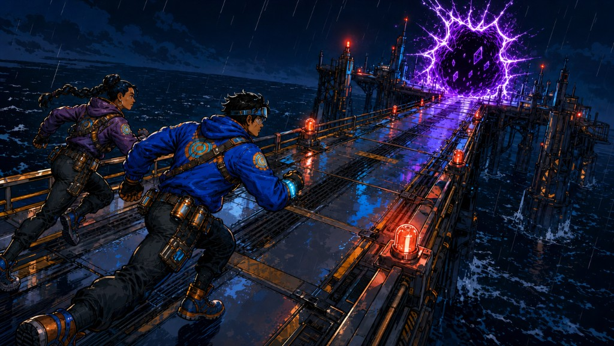
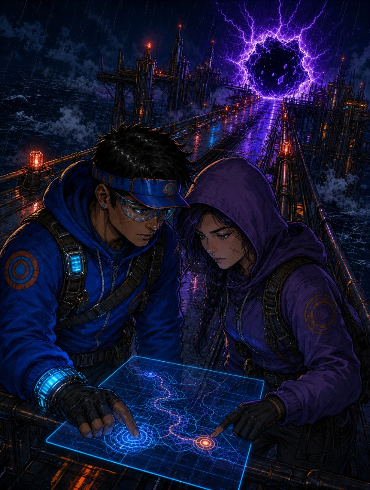
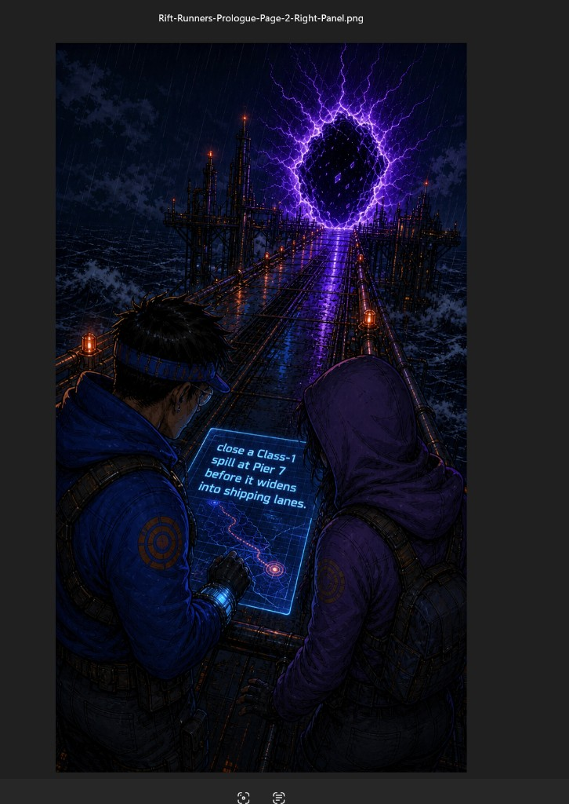
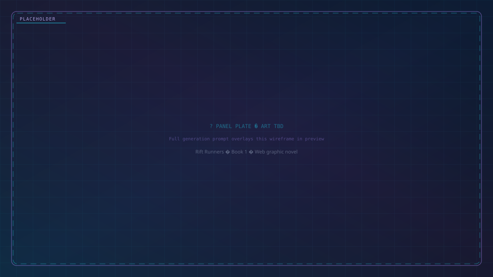

Re: The Crossing License · Prologue
From: Rift Runners · manuscript build
Subject: Prologue

Kade and Katelyn crossed the catwalk at a run, boots ringing wet metal while the rift pulsed ahead like a torn vein in the night.

Kade still heard Katelyn’s rule every time a contract clock started.

Do the map first. Move second. Panic last.

The contract read simple on paper: close a Class-1 spill at Pier 7 before it widened into shipping lanes.

Comic book panel. The scene must depict this story beat from the comic script (clear pose, props, and emotional read—not a generic portrait or a different moment): "Simple paid less than desperate. It also lied better." Staging requirement: visualize **pay-vs-wording cynicism**—small stingy payout props (chits, wire tally) against a glowing SIMPLE / clean-contract banner—so the image argues the caption, not unrelated hero action. Critical props for this exact beat: **stingy pay chits or wire tally** juxtaposed with a **too-clean contract banner / SIMPLE stamp**, Kade's skeptical posture secondary. Emotional read: bitter amusement at how cheap honesty sells. Differentiation constraint: **not a sprint or fight plate**—this is an **editorial juxtaposition** beat about money vs language. Character anchor: Kade: young gray-market rift runner, dark brown skin, close-cropped hair, tired pilot-alert eyes, worn patched flight jacket, thin gloves, courier band with unreadable glyph flicker. Setting anchor: rain-slick rift-contract catwalk over black water, anchor pylons, warning strobes, live breach core. Continuity anchor: Series continuity for this chapter: keep breach color language, anchor ring geometry, and causeway orientation consistent across all contract panels so escalation reads as one continuous failed run. Panel-specific shot plan (page 3, panel 5): editorial still-life tableau—**split frame or forced perspective** that contrasts a **small, stingy pay stack** (chits, wire tally, stamped LOW) with a **too-clean contract banner or glowing SIMPLE clause**; Kade may appear small in frame reacting, but the props carry the cynical argument. Primary visual intent: cynical juxtaposition—**money vs wording**—so the viewer feels how cheap the job pays and how slick the promise lies. Near-future sci-fi that feels grounded and lived-in: worn metal, cable runs, cold vapor, harsh practical lights. You can read the main shapes at a glance. Leave a little empty margin where speech balloons can go later. Do not draw dialogue or captions inside the image. Framing feels like a wide movie still: you can read the room in one look.
Simple paid less than desperate. It also lied better.
Comic book panel. The scene must depict this story beat from the comic script (clear pose, props, and emotional read—not a generic portrait or a different moment): "Katelyn was not old, but she had veteran patience: dark braid tucked under a dented runner hood, burn scar at the jaw, courier band wrapped in black tape where she'd cracked the glass twice and refused to replace it." Staging requirement: **Katelyn is the sole readable hero figure**; omit Kade or keep him as a distant minor silhouette so the portrait cannot be mistaken for a Kade plate. Critical props for this exact beat: courier band with unreadable glyph light. Emotional read: steady veteran calm—danger treated as weather. Differentiation constraint: **not the opening two-runner sprint**—single-subject mentor spotlight. Character anchor: Kade: young gray-market rift runner, dark brown skin, close-cropped hair, tired pilot-alert eyes, worn patched flight jacket, thin gloves, courier band with unreadable glyph flicker. Katelyn Voss: Kade's mentor, steady posture, dark braid under a worn hood, jawline burn scar, taped courier band over cracked glass. Setting anchor: rain-slick rift-contract catwalk over black water, anchor pylons, warning strobes, live breach core. Continuity anchor: Series continuity for this chapter: keep breach color language, anchor ring geometry, and causeway orientation consistent across all contract panels so escalation reads as one continuous failed run. Panel-specific shot plan (page 4, panel 6): medium hero portrait of **Katelyn alone**—hood, braid, jaw scar, taped cracked courier band readable at a glance—causeway rain and breach light as rim/backdrop only; **do not** mirror the opening two-shot sprint layout. Primary visual intent: **mentor spotlight**—Katelyn's face, hood, scar, and taped band sell history and competence in one portrait beat. Near-future sci-fi that feels grounded and lived-in: worn metal, cable runs, cold vapor, harsh practical lights. You can read the main shapes at a glance. Leave a little empty margin where speech balloons can go later. Do not draw dialogue or captions inside the image. Framing feels like a tall comic panel: figure and background both read clearly.
Katelyn was not old, but she had veteran patience: dark braid tucked under a dented runner hood, burn scar at the jaw, courier band wrapped in black tape where she'd cracked the glass twice and refused to replace it.
Comic book panel. The scene must depict this story beat from the comic script (clear pose, props, and emotional read—not a generic portrait or a different moment): "“Contract says six locks,” she said. “So the system buried the seventh.”." Do not render this as a floating talking head. Show speaking/listening body language in the active environment with one concrete task prop in frame. Character anchor: Kade: young gray-market rift runner, dark brown skin, close-cropped hair, tired pilot-alert eyes, worn patched flight jacket, thin gloves, courier band with unreadable glyph flicker. Setting anchor: rain-slick rift-contract catwalk over black water, anchor pylons, warning strobes, live breach core. Continuity anchor: Series continuity for this chapter: keep breach color language, anchor ring geometry, and causeway orientation consistent across all contract panels so escalation reads as one continuous failed run. Panel-specific shot plan (page 4, panel 7): communication beat framed as an interaction, with clear speaking/listening orientation and a visible source for the call or line. Primary visual intent: communication beat with clear listening posture and source of the call visible as a practical device, speaker, or ambient dock system. Near-future sci-fi that feels grounded and lived-in: worn metal, cable runs, cold vapor, harsh practical lights. You can read the main shapes at a glance. Leave a little empty margin where speech balloons can go later. Do not draw dialogue or captions inside the image. Framing feels like a tall comic panel: figure and background both read clearly.
“Contract says six locks,” she said. “So the system buried the seventh.”
Comic book panel. The scene must depict this story beat from the comic script (clear pose, props, and emotional read—not a generic portrait or a different moment): "“You calling scam?”." Do not render this as a floating talking head. Show speaking/listening body language in the active environment with one concrete task prop in frame. Character anchor: Kade: young gray-market rift runner, dark brown skin, close-cropped hair, tired pilot-alert eyes, worn patched flight jacket, thin gloves, courier band with unreadable glyph flicker. Setting anchor: rain-slick rift-contract catwalk over black water, anchor pylons, warning strobes, live breach core. Continuity anchor: Series continuity for this chapter: keep breach color language, anchor ring geometry, and causeway orientation consistent across all contract panels so escalation reads as one continuous failed run. Panel-specific shot plan (page 4, panel 8): medium portrait framing with one dominant gesture and one supporting prop. Primary visual intent: medium character-forward framing that keeps one decisive action and one anchoring environmental cue in the same shot. Near-future sci-fi that feels grounded and lived-in: worn metal, cable runs, cold vapor, harsh practical lights. You can read the main shapes at a glance. Leave a little empty margin where speech balloons can go later. Do not draw dialogue or captions inside the image. Framing feels like a tall comic panel: figure and background both read clearly.
“You calling scam?”
Comic book panel. The scene must depict this story beat from the comic script (clear pose, props, and emotional read—not a generic portrait or a different moment): "“I’m calling Port Grey.”." Do not render this as a floating talking head. Show speaking/listening body language in the active environment with one concrete task prop in frame. Character anchor: Kade: young gray-market rift runner, dark brown skin, close-cropped hair, tired pilot-alert eyes, worn patched flight jacket, thin gloves, courier band with unreadable glyph flicker. Setting anchor: rain-slick rift-contract catwalk over black water, anchor pylons, warning strobes, live breach core. Continuity anchor: Series continuity for this chapter: keep breach color language, anchor ring geometry, and causeway orientation consistent across all contract panels so escalation reads as one continuous failed run. Panel-specific shot plan (page 4, panel 9): medium portrait framing with one dominant gesture and one supporting prop. Primary visual intent: medium character-forward framing that keeps one decisive action and one anchoring environmental cue in the same shot. Near-future sci-fi that feels grounded and lived-in: worn metal, cable runs, cold vapor, harsh practical lights. You can read the main shapes at a glance. Leave a little empty margin where speech balloons can go later. Do not draw dialogue or captions inside the image. Framing feels like a tall comic panel: figure and background both read clearly.
“I’m calling Port Grey.”
Comic book panel. The scene must depict this story beat from the comic script (clear pose, props, and emotional read—not a generic portrait or a different moment): "The rift control plate sat in a spill of rain and blue static, puzzle nodes spinning in two contradictory grids." Character anchor: Kade: young gray-market rift runner, dark brown skin, close-cropped hair, tired pilot-alert eyes, worn patched flight jacket, thin gloves, courier band with unreadable glyph flicker. Setting anchor: rain-slick rift-contract catwalk over black water, anchor pylons, warning strobes, live breach core. Continuity anchor: Series continuity for this chapter: keep breach color language, anchor ring geometry, and causeway orientation consistent across all contract panels so escalation reads as one continuous failed run. Panel-specific shot plan (page 5, panel 10): technical hazard framing with puzzle/contract hardware in focus and operator decisions readable in the same frame. Primary visual intent: high-stakes technical action where the puzzle hardware, unstable breach, and operator choices are readable in one frame. Near-future sci-fi that feels grounded and lived-in: worn metal, cable runs, cold vapor, harsh practical lights. You can read the main shapes at a glance. Leave a little empty margin where speech balloons can go later. Do not draw dialogue or captions inside the image. Framing feels like a wide movie still: you can read the room in one look.
The rift control plate sat in a spill of rain and blue static, puzzle nodes spinning in two contradictory grids.
Comic book panel. The scene is a floating holographic readout panel as the dominant visual, glowing softly with the lines "[CONTRACT // CLOSURE STACK] Objective: SEAL BREACH VECTOR P7-11 Solve keystone sequence to arm anchor ring. Failure state: uncontrolled expansion event". Character anchor: Kade: young gray-market rift runner, dark brown skin, close-cropped hair, tired pilot-alert eyes, worn patched flight jacket, thin gloves, courier band with unreadable glyph flicker. Setting anchor: rain-slick rift-contract catwalk over black water, anchor pylons, warning strobes, live breach core. Continuity anchor: Series continuity for this chapter: keep breach color language, anchor ring geometry, and causeway orientation consistent across all contract panels so escalation reads as one continuous failed run. If there is a HUD, keep it as soft glow, simple shapes, and a few symbols, not a wall of tiny readable text. Panel-specific shot plan (page 6, panel 11): technical hazard framing with puzzle/contract hardware in focus and operator decisions readable in the same frame. Primary visual intent: make the information display feel story-critical, with the person and environment still readable around it rather than turning the panel into abstract UI noise. Near-future sci-fi that feels grounded and lived-in: worn metal, cable runs, cold vapor, harsh practical lights. You can read the main shapes at a glance. Leave a little empty margin where speech balloons can go later. Do not draw dialogue or captions inside the image. Any screen glow or HUD stays loose and abstract, not micro-legible blocks. Framing feels like a tall comic panel: figure and background both read clearly.
Readout
[CONTRACT // CLOSURE STACK]
Objective: SEAL BREACH VECTOR P7-11
Solve keystone sequence to arm anchor ring.
Failure state: uncontrolled expansion event.Comic book panel. The scene must depict this story beat from the comic script (clear pose, props, and emotional read—not a generic portrait or a different moment): "Kade dropped to one knee at the plate. Katelyn took watch with a coil rifle she only carried to scare scav drones, not people." Character anchor: Kade: young gray-market rift runner, dark brown skin, close-cropped hair, tired pilot-alert eyes, worn patched flight jacket, thin gloves, courier band with unreadable glyph flicker. Katelyn Voss: Kade's mentor, steady posture, dark braid under a worn hood, jawline burn scar, taped courier band over cracked glass. Setting anchor: rain-slick rift-contract catwalk over black water, anchor pylons, warning strobes, live breach core. Continuity anchor: Series continuity for this chapter: keep breach color language, anchor ring geometry, and causeway orientation consistent across all contract panels so escalation reads as one continuous failed run. Panel-specific shot plan (page 6, panel 12): medium portrait framing with one dominant gesture and one supporting prop. Primary visual intent: medium character-forward framing that keeps one decisive action and one anchoring environmental cue in the same shot. Near-future sci-fi that feels grounded and lived-in: worn metal, cable runs, cold vapor, harsh practical lights. You can read the main shapes at a glance. Leave a little empty margin where speech balloons can go later. Do not draw dialogue or captions inside the image. Framing feels like a tall comic panel: figure and background both read clearly.
Kade dropped to one knee at the plate. Katelyn took watch with a coil rifle she only carried to scare scav drones, not people.
Comic book panel. The scene must depict this story beat from the comic script (clear pose, props, and emotional read—not a generic portrait or a different moment): "Node one accepted his touch." Concrete staging requirement: include a clear physical action, a readable prop, and an environmental anchor so this beat does not become a generic portrait. Character anchor: Kade: young gray-market rift runner, dark brown skin, close-cropped hair, tired pilot-alert eyes, worn patched flight jacket, thin gloves, courier band with unreadable glyph flicker. Setting anchor: rain-slick rift-contract catwalk over black water, anchor pylons, warning strobes, live breach core. Continuity anchor: Series continuity for this chapter: keep breach color language, anchor ring geometry, and causeway orientation consistent across all contract panels so escalation reads as one continuous failed run. Panel-specific shot plan (page 6, panel 13): tight portrait framing with background depth cues kept simple and uncluttered. Primary visual intent: medium character-forward framing that keeps one decisive action and one anchoring environmental cue in the same shot. Near-future sci-fi that feels grounded and lived-in: worn metal, cable runs, cold vapor, harsh practical lights. You can read the main shapes at a glance. Leave a little empty margin where speech balloons can go later. Do not draw dialogue or captions inside the image. Framing feels like a tall comic panel: figure and background both read clearly.
Node one accepted his touch.
Comic book panel. The scene must depict this story beat from the comic script (clear pose, props, and emotional read—not a generic portrait or a different moment): "Node two lied." Character anchor: Kade: young gray-market rift runner, dark brown skin, close-cropped hair, tired pilot-alert eyes, worn patched flight jacket, thin gloves, courier band with unreadable glyph flicker. Setting anchor: rain-slick rift-contract catwalk over black water, anchor pylons, warning strobes, live breach core. Continuity anchor: Series continuity for this chapter: keep breach color language, anchor ring geometry, and causeway orientation consistent across all contract panels so escalation reads as one continuous failed run. Panel-specific shot plan (page 7, panel 14): lateral wide with strong left-right movement read and clear negative space for balloons. Primary visual intent: wide establishing composition where spatial geography is easy to parse in one look. Near-future sci-fi that feels grounded and lived-in: worn metal, cable runs, cold vapor, harsh practical lights. You can read the main shapes at a glance. Leave a little empty margin where speech balloons can go later. Do not draw dialogue or captions inside the image. Framing feels like a wide movie still: you can read the room in one look.
Node two lied.
Comic book panel. The scene must depict this story beat from the comic script (clear pose, props, and emotional read—not a generic portrait or a different moment): "The true line crawled left while its reflection crawled right. He picked right. The plate buzzed rejection hard enough to numb his glove." Character anchor: Kade: young gray-market rift runner, dark brown skin, close-cropped hair, tired pilot-alert eyes, worn patched flight jacket, thin gloves, courier band with unreadable glyph flicker. Setting anchor: rain-slick rift-contract catwalk over black water, anchor pylons, warning strobes, live breach core. Continuity anchor: Series continuity for this chapter: keep breach color language, anchor ring geometry, and causeway orientation consistent across all contract panels so escalation reads as one continuous failed run. Panel-specific shot plan (page 8, panel 15): over-shoulder portrait framing that keeps expression and context both readable. Primary visual intent: medium character-forward framing that keeps one decisive action and one anchoring environmental cue in the same shot. Near-future sci-fi that feels grounded and lived-in: worn metal, cable runs, cold vapor, harsh practical lights. You can read the main shapes at a glance. Leave a little empty margin where speech balloons can go later. Do not draw dialogue or captions inside the image. Framing feels like a tall comic panel: figure and background both read clearly.
The true line crawled left while its reflection crawled right. He picked right. The plate buzzed rejection hard enough to numb his glove.
Comic book panel. The scene must depict this story beat from the comic script (clear pose, props, and emotional read—not a generic portrait or a different moment): "Katelyn pivoted back toward him. “Stop chasing speed. Read the rhythm.”." Concrete staging requirement: include a clear physical action, a readable prop, and an environmental anchor so this beat does not become a generic portrait. Character anchor: Kade: young gray-market rift runner, dark brown skin, close-cropped hair, tired pilot-alert eyes, worn patched flight jacket, thin gloves, courier band with unreadable glyph flicker. Katelyn Voss: Kade's mentor, steady posture, dark braid under a worn hood, jawline burn scar, taped courier band over cracked glass. Setting anchor: rain-slick rift-contract catwalk over black water, anchor pylons, warning strobes, live breach core. Continuity anchor: Series continuity for this chapter: keep breach color language, anchor ring geometry, and causeway orientation consistent across all contract panels so escalation reads as one continuous failed run. Panel-specific shot plan (page 8, panel 16): over-shoulder portrait framing that keeps expression and context both readable. Primary visual intent: medium character-forward framing that keeps one decisive action and one anchoring environmental cue in the same shot. Near-future sci-fi that feels grounded and lived-in: worn metal, cable runs, cold vapor, harsh practical lights. You can read the main shapes at a glance. Leave a little empty margin where speech balloons can go later. Do not draw dialogue or captions inside the image. Framing feels like a tall comic panel: figure and background both read clearly.
Katelyn pivoted back toward him. “Stop chasing speed. Read the rhythm.”
Comic book panel. The scene must depict this story beat from the comic script (clear pose, props, and emotional read—not a generic portrait or a different moment): "He reset." Concrete staging requirement: include a clear physical action, a readable prop, and an environmental anchor so this beat does not become a generic portrait. Character anchor: Kade: young gray-market rift runner, dark brown skin, close-cropped hair, tired pilot-alert eyes, worn patched flight jacket, thin gloves, courier band with unreadable glyph flicker. Setting anchor: rain-slick rift-contract catwalk over black water, anchor pylons, warning strobes, live breach core. Continuity anchor: Series continuity for this chapter: keep breach color language, anchor ring geometry, and causeway orientation consistent across all contract panels so escalation reads as one continuous failed run. Panel-specific shot plan (page 8, panel 17): over-shoulder portrait framing that keeps expression and context both readable. Primary visual intent: medium character-forward framing that keeps one decisive action and one anchoring environmental cue in the same shot. Near-future sci-fi that feels grounded and lived-in: worn metal, cable runs, cold vapor, harsh practical lights. You can read the main shapes at a glance. Leave a little empty margin where speech balloons can go later. Do not draw dialogue or captions inside the image. Framing feels like a tall comic panel: figure and background both read clearly.
He reset.
Comic book panel. The scene must depict this story beat from the comic script (clear pose, props, and emotional read—not a generic portrait or a different moment): "Above them, gantry alarms shifted from amber to red." Concrete staging requirement: include a clear physical action, a readable prop, and an environmental anchor so this beat does not become a generic portrait. Critical props for this exact beat: gantry numerals. Character anchor: Kade: young gray-market rift runner, dark brown skin, close-cropped hair, tired pilot-alert eyes, worn patched flight jacket, thin gloves, courier band with unreadable glyph flicker. Setting anchor: rain-slick rift-contract catwalk over black water, anchor pylons, warning strobes, live breach core. Continuity anchor: Series continuity for this chapter: keep breach color language, anchor ring geometry, and causeway orientation consistent across all contract panels so escalation reads as one continuous failed run. Panel-specific shot plan (page 9, panel 18): lateral wide with strong left-right movement read and clear negative space for balloons. Primary visual intent: wide establishing composition where spatial geography is easy to parse in one look. Near-future sci-fi that feels grounded and lived-in: worn metal, cable runs, cold vapor, harsh practical lights. You can read the main shapes at a glance. Leave a little empty margin where speech balloons can go later. Do not draw dialogue or captions inside the image. Framing feels like a wide movie still: you can read the room in one look.
Above them, gantry alarms shifted from amber to red.
Comic book panel. The scene must depict this story beat from the comic script (clear pose, props, and emotional read—not a generic portrait or a different moment): "“Clock changed,” Kade said." Do not render this as a floating talking head. Show speaking/listening body language in the active environment with one concrete task prop in frame. Character anchor: Kade: young gray-market rift runner, dark brown skin, close-cropped hair, tired pilot-alert eyes, worn patched flight jacket, thin gloves, courier band with unreadable glyph flicker. Setting anchor: rain-slick rift-contract catwalk over black water, anchor pylons, warning strobes, live breach core. Continuity anchor: Series continuity for this chapter: keep breach color language, anchor ring geometry, and causeway orientation consistent across all contract panels so escalation reads as one continuous failed run. Panel-specific shot plan (page 10, panel 19): communication beat framed as an interaction, with clear speaking/listening orientation and a visible source for the call or line. Primary visual intent: communication beat with clear listening posture and source of the call visible as a practical device, speaker, or ambient dock system. Near-future sci-fi that feels grounded and lived-in: worn metal, cable runs, cold vapor, harsh practical lights. You can read the main shapes at a glance. Leave a little empty margin where speech balloons can go later. Do not draw dialogue or captions inside the image. Framing feels like a tall comic panel: figure and background both read clearly.
“Clock changed,” Kade said.
Comic book panel. The scene must depict this story beat from the comic script (clear pose, props, and emotional read—not a generic portrait or a different moment): "“No,” Katelyn said. “Clock got honest.”." Do not render this as a floating talking head. Show speaking/listening body language in the active environment with one concrete task prop in frame. Character anchor: Kade: young gray-market rift runner, dark brown skin, close-cropped hair, tired pilot-alert eyes, worn patched flight jacket, thin gloves, courier band with unreadable glyph flicker. Katelyn Voss: Kade's mentor, steady posture, dark braid under a worn hood, jawline burn scar, taped courier band over cracked glass. Setting anchor: rain-slick rift-contract catwalk over black water, anchor pylons, warning strobes, live breach core. Continuity anchor: Series continuity for this chapter: keep breach color language, anchor ring geometry, and causeway orientation consistent across all contract panels so escalation reads as one continuous failed run. Panel-specific shot plan (page 10, panel 20): communication beat framed as an interaction, with clear speaking/listening orientation and a visible source for the call or line. Primary visual intent: communication beat with clear listening posture and source of the call visible as a practical device, speaker, or ambient dock system. Near-future sci-fi that feels grounded and lived-in: worn metal, cable runs, cold vapor, harsh practical lights. You can read the main shapes at a glance. Leave a little empty margin where speech balloons can go later. Do not draw dialogue or captions inside the image. Framing feels like a tall comic panel: figure and background both read clearly.
“No,” Katelyn said. “Clock got honest.”
Comic book panel. The scene must depict this story beat from the comic script (clear pose, props, and emotional read—not a generic portrait or a different moment): "He found the third node by feel, not sight: a dead corner that only lit after a five-count pause. Then the fourth. Then the fifth." Character anchor: Kade: young gray-market rift runner, dark brown skin, close-cropped hair, tired pilot-alert eyes, worn patched flight jacket, thin gloves, courier band with unreadable glyph flicker. Setting anchor: rain-slick rift-contract catwalk over black water, anchor pylons, warning strobes, live breach core. Continuity anchor: Series continuity for this chapter: keep breach color language, anchor ring geometry, and causeway orientation consistent across all contract panels so escalation reads as one continuous failed run. Panel-specific shot plan (page 10, panel 21): tight portrait framing with background depth cues kept simple and uncluttered. Primary visual intent: medium character-forward framing that keeps one decisive action and one anchoring environmental cue in the same shot. Near-future sci-fi that feels grounded and lived-in: worn metal, cable runs, cold vapor, harsh practical lights. You can read the main shapes at a glance. Leave a little empty margin where speech balloons can go later. Do not draw dialogue or captions inside the image. Framing feels like a tall comic panel: figure and background both read clearly.
He found the third node by feel, not sight: a dead corner that only lit after a five-count pause. Then the fourth. Then the fifth.
Comic book panel. The scene must depict this story beat from the comic script (clear pose, props, and emotional read—not a generic portrait or a different moment): "The sixth split into nine." Concrete staging requirement: include a clear physical action, a readable prop, and an environmental anchor so this beat does not become a generic portrait. Character anchor: Kade: young gray-market rift runner, dark brown skin, close-cropped hair, tired pilot-alert eyes, worn patched flight jacket, thin gloves, courier band with unreadable glyph flicker. Setting anchor: rain-slick rift-contract catwalk over black water, anchor pylons, warning strobes, live breach core. Continuity anchor: Series continuity for this chapter: keep breach color language, anchor ring geometry, and causeway orientation consistent across all contract panels so escalation reads as one continuous failed run. Panel-specific shot plan (page 10, panel 22): tight portrait framing with background depth cues kept simple and uncluttered. Primary visual intent: medium character-forward framing that keeps one decisive action and one anchoring environmental cue in the same shot. Near-future sci-fi that feels grounded and lived-in: worn metal, cable runs, cold vapor, harsh practical lights. You can read the main shapes at a glance. Leave a little empty margin where speech balloons can go later. Do not draw dialogue or captions inside the image. Framing feels like a tall comic panel: figure and background both read clearly.
The sixth split into nine.
Comic book panel. The scene must depict this story beat from the comic script (clear pose, props, and emotional read—not a generic portrait or a different moment): "Rain hammered louder. The rift widened a handspan." Character anchor: Kade: young gray-market rift runner, dark brown skin, close-cropped hair, tired pilot-alert eyes, worn patched flight jacket, thin gloves, courier band with unreadable glyph flicker. Setting anchor: rain-slick rift-contract catwalk over black water, anchor pylons, warning strobes, live breach core. Continuity anchor: Series continuity for this chapter: keep breach color language, anchor ring geometry, and causeway orientation consistent across all contract panels so escalation reads as one continuous failed run. Panel-specific shot plan (page 11, panel 23): technical hazard framing with puzzle/contract hardware in focus and operator decisions readable in the same frame. Primary visual intent: high-stakes technical action where the puzzle hardware, unstable breach, and operator choices are readable in one frame. Near-future sci-fi that feels grounded and lived-in: worn metal, cable runs, cold vapor, harsh practical lights. You can read the main shapes at a glance. Leave a little empty margin where speech balloons can go later. Do not draw dialogue or captions inside the image. Framing feels like a wide movie still: you can read the room in one look.
Rain hammered louder. The rift widened a handspan.
Comic book panel. The scene must depict this story beat from the comic script (clear pose, props, and emotional read—not a generic portrait or a different moment): "“There’s your hidden lock,” Katelyn said, voice flat now. “Keystone pair. Pick the wrong twin and it eats the anchor.”." Do not render this as a floating talking head. Show speaking/listening body language in the active environment with one concrete task prop in frame. Emotional read: drained institutional friction between person and system. Character anchor: Kade: young gray-market rift runner, dark brown skin, close-cropped hair, tired pilot-alert eyes, worn patched flight jacket, thin gloves, courier band with unreadable glyph flicker. Katelyn Voss: Kade's mentor, steady posture, dark braid under a worn hood, jawline burn scar, taped courier band over cracked glass. Setting anchor: wet Port Grey alleys/streets, dead-neon stacks, vector lattice overlays, pier-head route pressure. Continuity anchor: If other panels already showed this Port Grey street run, keep lattice overlay color logic, keystone placement on the arch, and adjuster route separation consistent with prior art. Panel-specific shot plan (page 12, panel 24): communication beat framed as an interaction, with clear speaking/listening orientation and a visible source for the call or line. Primary visual intent: communication beat with clear listening posture and source of the call visible as a practical device, speaker, or ambient dock system. Near-future sci-fi that feels grounded and lived-in: worn metal, cable runs, cold vapor, harsh practical lights. You can read the main shapes at a glance. Leave a little empty margin where speech balloons can go later. Do not draw dialogue or captions inside the image. Framing feels like a tall comic panel: figure and background both read clearly.
“There’s your hidden lock,” Katelyn said, voice flat now. “Keystone pair. Pick the wrong twin and it eats the anchor.”
Comic book panel. The scene must depict this story beat from the comic script (clear pose, props, and emotional read—not a generic portrait or a different moment): "Kade’s band stuttered against his skin, glyphs flipping too fast to parse." Critical props for this exact beat: courier band glyph pulse. Character anchor: Kade: young gray-market rift runner, dark brown skin, close-cropped hair, tired pilot-alert eyes, worn patched flight jacket, thin gloves, courier band with unreadable glyph flicker. Setting anchor: rain-slick rift-contract catwalk over black water, anchor pylons, warning strobes, live breach core. Continuity anchor: Series continuity for this chapter: keep breach color language, anchor ring geometry, and causeway orientation consistent across all contract panels so escalation reads as one continuous failed run. Panel-specific shot plan (page 12, panel 25): tight portrait framing with background depth cues kept simple and uncluttered. Primary visual intent: reaction-driven close framing where expression and the courier band read first, with environment depth still present. Near-future sci-fi that feels grounded and lived-in: worn metal, cable runs, cold vapor, harsh practical lights. You can read the main shapes at a glance. Leave a little empty margin where speech balloons can go later. Do not draw dialogue or captions inside the image. Framing feels like a tall comic panel: figure and background both read clearly.
Kade’s band stuttered against his skin, glyphs flipping too fast to parse.
Comic book panel. The scene must depict this story beat from the comic script (clear pose, props, and emotional read—not a generic portrait or a different moment): "He guessed." Concrete staging requirement: include a clear physical action, a readable prop, and an environmental anchor so this beat does not become a generic portrait. Character anchor: Kade: young gray-market rift runner, dark brown skin, close-cropped hair, tired pilot-alert eyes, worn patched flight jacket, thin gloves, courier band with unreadable glyph flicker. Setting anchor: rain-slick rift-contract catwalk over black water, anchor pylons, warning strobes, live breach core. Continuity anchor: Series continuity for this chapter: keep breach color language, anchor ring geometry, and causeway orientation consistent across all contract panels so escalation reads as one continuous failed run. Panel-specific shot plan (page 12, panel 26): tight portrait framing with background depth cues kept simple and uncluttered. Primary visual intent: medium character-forward framing that keeps one decisive action and one anchoring environmental cue in the same shot. Near-future sci-fi that feels grounded and lived-in: worn metal, cable runs, cold vapor, harsh practical lights. You can read the main shapes at a glance. Leave a little empty margin where speech balloons can go later. Do not draw dialogue or captions inside the image. Framing feels like a tall comic panel: figure and background both read clearly.
He guessed.
Comic book panel. The scene must depict this story beat from the comic script (clear pose, props, and emotional read—not a generic portrait or a different moment): "The ring fired wrong." Concrete staging requirement: include a clear physical action, a readable prop, and an environmental anchor so this beat does not become a generic portrait. Character anchor: Kade: young gray-market rift runner, dark brown skin, close-cropped hair, tired pilot-alert eyes, worn patched flight jacket, thin gloves, courier band with unreadable glyph flicker. Setting anchor: rain-slick rift-contract catwalk over black water, anchor pylons, warning strobes, live breach core. Continuity anchor: Series continuity for this chapter: keep breach color language, anchor ring geometry, and causeway orientation consistent across all contract panels so escalation reads as one continuous failed run. Panel-specific shot plan (page 13, panel 27): deep centerline wide where environmental perspective lines point to the beat focus. Primary visual intent: wide establishing composition where spatial geography is easy to parse in one look. Near-future sci-fi that feels grounded and lived-in: worn metal, cable runs, cold vapor, harsh practical lights. You can read the main shapes at a glance. Leave a little empty margin where speech balloons can go later. Do not draw dialogue or captions inside the image. Framing feels like a wide movie still: you can read the room in one look.
The ring fired wrong.
Comic book panel. The scene must depict this story beat from the comic script (clear pose, props, and emotional read—not a generic portrait or a different moment): "The anchor pylons around the causeway snapped from blue to ultraviolet, then blew outward like sparks from a grinder wheel. The catwalk lurched under them." Character anchor: Kade: young gray-market rift runner, dark brown skin, close-cropped hair, tired pilot-alert eyes, worn patched flight jacket, thin gloves, courier band with unreadable glyph flicker. Setting anchor: rain-slick rift-contract catwalk over black water, anchor pylons, warning strobes, live breach core. Continuity anchor: Series continuity for this chapter: keep breach color language, anchor ring geometry, and causeway orientation consistent across all contract panels so escalation reads as one continuous failed run. Panel-specific shot plan (page 14, panel 28): technical hazard framing with puzzle/contract hardware in focus and operator decisions readable in the same frame. Primary visual intent: high-stakes technical action where the puzzle hardware, unstable breach, and operator choices are readable in one frame. Near-future sci-fi that feels grounded and lived-in: worn metal, cable runs, cold vapor, harsh practical lights. You can read the main shapes at a glance. Leave a little empty margin where speech balloons can go later. Do not draw dialogue or captions inside the image. Framing feels like a tall comic panel: figure and background both read clearly.
The anchor pylons around the causeway snapped from blue to ultraviolet, then blew outward like sparks from a grinder wheel. The catwalk lurched under them.
Comic book panel. The scene must depict this story beat from the comic script (clear pose, props, and emotional read—not a generic portrait or a different moment): "Katelyn moved before he finished cursing." Concrete staging requirement: include a clear physical action, a readable prop, and an environmental anchor so this beat does not become a generic portrait. Character anchor: Kade: young gray-market rift runner, dark brown skin, close-cropped hair, tired pilot-alert eyes, worn patched flight jacket, thin gloves, courier band with unreadable glyph flicker. Katelyn Voss: Kade's mentor, steady posture, dark braid under a worn hood, jawline burn scar, taped courier band over cracked glass. Setting anchor: rain-slick rift-contract catwalk over black water, anchor pylons, warning strobes, live breach core. Continuity anchor: Series continuity for this chapter: keep breach color language, anchor ring geometry, and causeway orientation consistent across all contract panels so escalation reads as one continuous failed run. Panel-specific shot plan (page 14, panel 29): over-shoulder portrait framing that keeps expression and context both readable. Primary visual intent: committed forward motion—lean, cadence, and route cues read clearly even when the frame is not packed with bodies. Near-future sci-fi that feels grounded and lived-in: worn metal, cable runs, cold vapor, harsh practical lights. You can read the main shapes at a glance. Leave a little empty margin where speech balloons can go later. Do not draw dialogue or captions inside the image. Framing feels like a tall comic panel: figure and background both read clearly.
Katelyn moved before he finished cursing.
Comic book panel. The scene must depict this story beat from the comic script (clear pose, props, and emotional read—not a generic portrait or a different moment): "She hit his shoulder, drove him behind the plate housing, and took the backlash herself when the rift mouth inverted." Character anchor: Kade: young gray-market rift runner, dark brown skin, close-cropped hair, tired pilot-alert eyes, worn patched flight jacket, thin gloves, courier band with unreadable glyph flicker. Setting anchor: rain-slick rift-contract catwalk over black water, anchor pylons, warning strobes, live breach core. Continuity anchor: Series continuity for this chapter: keep breach color language, anchor ring geometry, and causeway orientation consistent across all contract panels so escalation reads as one continuous failed run. Panel-specific shot plan (page 14, panel 30): technical hazard framing with puzzle/contract hardware in focus and operator decisions readable in the same frame. Primary visual intent: high-stakes technical action where the puzzle hardware, unstable breach, and operator choices are readable in one frame. Near-future sci-fi that feels grounded and lived-in: worn metal, cable runs, cold vapor, harsh practical lights. You can read the main shapes at a glance. Leave a little empty margin where speech balloons can go later. Do not draw dialogue or captions inside the image. Framing feels like a tall comic panel: figure and background both read clearly.
She hit his shoulder, drove him behind the plate housing, and took the backlash herself when the rift mouth inverted.
Comic book panel. The scene must depict this story beat from the comic script (clear pose, props, and emotional read—not a generic portrait or a different moment): "There was no cinematic scream. Just a sharp inhale and her name half-formed in his throat." Character anchor: Kade: young gray-market rift runner, dark brown skin, close-cropped hair, tired pilot-alert eyes, worn patched flight jacket, thin gloves, courier band with unreadable glyph flicker. Setting anchor: rain-slick rift-contract catwalk over black water, anchor pylons, warning strobes, live breach core. Additional staging and continuity from production notes: The instant Katelyn is taken—Kade thrown to deck in foreground, her silhouette stretched toward the rift core with tether sparks and broken anchor pylons around them Continuity anchor: Series continuity for this chapter: keep breach color language, anchor ring geometry, and causeway orientation consistent across all contract panels so escalation reads as one continuous failed run. Panel-specific shot plan (page 14, panel 31): over-shoulder portrait framing that keeps expression and context both readable. Primary visual intent: medium character-forward framing that keeps one decisive action and one anchoring environmental cue in the same shot. Near-future sci-fi, lived-in metal and plastic, harsh practical light. Leave a little empty margin where speech balloons can go later. Do not draw dialogue or captions inside the image. Framing feels like a tall comic panel: figure and background both read clearly.
There was no cinematic scream. Just a sharp inhale and her name half-formed in his throat.
Comic book panel. The scene must depict this story beat from the comic script (clear pose, props, and emotional read—not a generic portrait or a different moment): "Then she was there and not there, body pulled thin by blue-black shear until the light folded and swallowed her." Emotional read: brittle humor over stress, never fully relaxed. Character anchor: Kade: young gray-market rift runner, dark brown skin, close-cropped hair, tired pilot-alert eyes, worn patched flight jacket, thin gloves, courier band with unreadable glyph flicker. Setting anchor: rain-slick rift-contract catwalk over black water, anchor pylons, warning strobes, live breach core. Continuity anchor: Series continuity for this chapter: keep breach color language, anchor ring geometry, and causeway orientation consistent across all contract panels so escalation reads as one continuous failed run. Panel-specific shot plan (page 15, panel 32): deep centerline wide where environmental perspective lines point to the beat focus. Primary visual intent: wide establishing composition where spatial geography is easy to parse in one look. Near-future sci-fi that feels grounded and lived-in: worn metal, cable runs, cold vapor, harsh practical lights. You can read the main shapes at a glance. Leave a little empty margin where speech balloons can go later. Do not draw dialogue or captions inside the image. Framing feels like a wide movie still: you can read the room in one look.
Then she was there and not there, body pulled thin by blue-black shear until the light folded and swallowed her.
Comic book panel. The scene must depict this story beat from the comic script (clear pose, props, and emotional read—not a generic portrait or a different moment): "Kade slammed both palms into the emergency deadman and forced a local collapse pulse." Character anchor: Kade: young gray-market rift runner, dark brown skin, close-cropped hair, tired pilot-alert eyes, worn patched flight jacket, thin gloves, courier band with unreadable glyph flicker. Setting anchor: rain-slick rift-contract catwalk over black water, anchor pylons, warning strobes, live breach core. Continuity anchor: Series continuity for this chapter: keep breach color language, anchor ring geometry, and causeway orientation consistent across all contract panels so escalation reads as one continuous failed run. Panel-specific shot plan (page 16, panel 33): medium portrait framing with one dominant gesture and one supporting prop. Primary visual intent: reaction-driven close framing where expression and the courier band read first, with environment depth still present. Near-future sci-fi that feels grounded and lived-in: worn metal, cable runs, cold vapor, harsh practical lights. You can read the main shapes at a glance. Leave a little empty margin where speech balloons can go later. Do not draw dialogue or captions inside the image. Framing feels like a tall comic panel: figure and background both read clearly.
Kade slammed both palms into the emergency deadman and forced a local collapse pulse.
Comic book panel. The scene must depict this story beat from the comic script (clear pose, props, and emotional read—not a generic portrait or a different moment): "The pulse sealed the outer edge." Concrete staging requirement: include a clear physical action, a readable prop, and an environmental anchor so this beat does not become a generic portrait. Character anchor: Kade: young gray-market rift runner, dark brown skin, close-cropped hair, tired pilot-alert eyes, worn patched flight jacket, thin gloves, courier band with unreadable glyph flicker. Setting anchor: rain-slick rift-contract catwalk over black water, anchor pylons, warning strobes, live breach core. Continuity anchor: Series continuity for this chapter: keep breach color language, anchor ring geometry, and causeway orientation consistent across all contract panels so escalation reads as one continuous failed run. Panel-specific shot plan (page 16, panel 34): medium portrait framing with one dominant gesture and one supporting prop. Primary visual intent: reaction-driven close framing where expression and the courier band read first, with environment depth still present. Near-future sci-fi that feels grounded and lived-in: worn metal, cable runs, cold vapor, harsh practical lights. You can read the main shapes at a glance. Leave a little empty margin where speech balloons can go later. Do not draw dialogue or captions inside the image. Framing feels like a tall comic panel: figure and background both read clearly.
The pulse sealed the outer edge.
Comic book panel. The scene must depict this story beat from the comic script (clear pose, props, and emotional read—not a generic portrait or a different moment): "It did not give her back." Concrete staging requirement: include a clear physical action, a readable prop, and an environmental anchor so this beat does not become a generic portrait. Character anchor: Kade: young gray-market rift runner, dark brown skin, close-cropped hair, tired pilot-alert eyes, worn patched flight jacket, thin gloves, courier band with unreadable glyph flicker. Setting anchor: rain-slick rift-contract catwalk over black water, anchor pylons, warning strobes, live breach core. Continuity anchor: Series continuity for this chapter: keep breach color language, anchor ring geometry, and causeway orientation consistent across all contract panels so escalation reads as one continuous failed run. Panel-specific shot plan (page 16, panel 35): medium portrait framing with one dominant gesture and one supporting prop. Primary visual intent: medium character-forward framing that keeps one decisive action and one anchoring environmental cue in the same shot. Near-future sci-fi that feels grounded and lived-in: worn metal, cable runs, cold vapor, harsh practical lights. You can read the main shapes at a glance. Leave a little empty margin where speech balloons can go later. Do not draw dialogue or captions inside the image. Framing feels like a tall comic panel: figure and background both read clearly.
It did not give her back.
Comic book panel. The scene must depict this story beat from the comic script (clear pose, props, and emotional read—not a generic portrait or a different moment): "What remained on the deck was her taped courier band and a contract that now listed one runner status as UNRESOLVED ASSET." Critical props for this exact beat: courier band with unreadable glyph light. Character anchor: Kade: young gray-market rift runner, dark brown skin, close-cropped hair, tired pilot-alert eyes, worn patched flight jacket, thin gloves, courier band with unreadable glyph flicker. Setting anchor: rain-slick rift-contract catwalk over black water, anchor pylons, warning strobes, live breach core. Continuity anchor: Series continuity for this chapter: keep breach color language, anchor ring geometry, and causeway orientation consistent across all contract panels so escalation reads as one continuous failed run. Panel-specific shot plan (page 17, panel 36): technical hazard framing with puzzle/contract hardware in focus and operator decisions readable in the same frame. Primary visual intent: high-stakes technical action where the puzzle hardware, unstable breach, and operator choices are readable in one frame. Near-future sci-fi that feels grounded and lived-in: worn metal, cable runs, cold vapor, harsh practical lights. You can read the main shapes at a glance. Leave a little empty margin where speech balloons can go later. Do not draw dialogue or captions inside the image. Framing feels like a wide movie still: you can read the room in one look.
What remained on the deck was her taped courier band and a contract that now listed one runner status as UNRESOLVED ASSET.
Comic book panel. The scene is a floating holographic readout panel as the dominant visual, glowing softly with the lines "[CONTRACT // INCIDENT REVISION] Primary closer: Kade Orin Secondary closer: Katelyn Voss Secondary status: LOST DURING CONTAINMENT Liability transfer: PENDING REVIEW". Character anchor: Kade: young gray-market rift runner, dark brown skin, close-cropped hair, tired pilot-alert eyes, worn patched flight jacket, thin gloves, courier band with unreadable glyph flicker. Katelyn Voss: Kade's mentor, steady posture, dark braid under a worn hood, jawline burn scar, taped courier band over cracked glass. Setting anchor: rain-slick rift-contract catwalk over black water, anchor pylons, warning strobes, live breach core. Continuity anchor: Series continuity for this chapter: keep breach color language, anchor ring geometry, and causeway orientation consistent across all contract panels so escalation reads as one continuous failed run. If there is a HUD, keep it as soft glow, simple shapes, and a few symbols, not a wall of tiny readable text. Panel-specific shot plan (page 18, panel 37): kinetic tracking angle emphasizing stride, lean, and directional lines in the environment. Primary visual intent: make the information display feel story-critical, with the person and environment still readable around it rather than turning the panel into abstract UI noise. Near-future sci-fi that feels grounded and lived-in: worn metal, cable runs, cold vapor, harsh practical lights. You can read the main shapes at a glance. Leave a little empty margin where speech balloons can go later. Do not draw dialogue or captions inside the image. Any screen glow or HUD stays loose and abstract, not micro-legible blocks. Framing feels like a tall comic panel: figure and background both read clearly.
Readout
[CONTRACT // INCIDENT REVISION]
Primary closer: Kade Orin
Secondary closer: Katelyn Voss
Secondary status: LOST DURING CONTAINMENT
Liability transfer: PENDING REVIEWComic book panel. The scene must depict this story beat from the comic script (clear pose, props, and emotional read—not a generic portrait or a different moment): "By dawn, cleanup drones had already painted over the scorch marks." Concrete staging requirement: include a clear physical action, a readable prop, and an environmental anchor so this beat does not become a generic portrait. Character anchor: Kade: young gray-market rift runner, dark brown skin, close-cropped hair, tired pilot-alert eyes, worn patched flight jacket, thin gloves, courier band with unreadable glyph flicker. Setting anchor: rain-slick rift-contract catwalk over black water, anchor pylons, warning strobes, live breach core. Continuity anchor: Series continuity for this chapter: keep breach color language, anchor ring geometry, and causeway orientation consistent across all contract panels so escalation reads as one continuous failed run. Panel-specific shot plan (page 18, panel 38): slight low-angle portrait framing to emphasize urgency and body posture. Primary visual intent: medium character-forward framing that keeps one decisive action and one anchoring environmental cue in the same shot. Near-future sci-fi that feels grounded and lived-in: worn metal, cable runs, cold vapor, harsh practical lights. You can read the main shapes at a glance. Leave a little empty margin where speech balloons can go later. Do not draw dialogue or captions inside the image. Framing feels like a tall comic panel: figure and background both read clearly.
By dawn, cleanup drones had already painted over the scorch marks.
Comic book panel. The scene must depict this story beat from the comic script (clear pose, props, and emotional read—not a generic portrait or a different moment): "By noon, MIRE had converted grief into paperwork." Concrete staging requirement: include a clear physical action, a readable prop, and an environmental anchor so this beat does not become a generic portrait. Character anchor: Kade: young gray-market rift runner, dark brown skin, close-cropped hair, tired pilot-alert eyes, worn patched flight jacket, thin gloves, courier band with unreadable glyph flicker. Setting anchor: rain-slick rift-contract catwalk over black water, anchor pylons, warning strobes, live breach core. Continuity anchor: Series continuity for this chapter: keep breach color language, anchor ring geometry, and causeway orientation consistent across all contract panels so escalation reads as one continuous failed run. Panel-specific shot plan (page 18, panel 39): over-shoulder portrait framing that keeps expression and context both readable. Primary visual intent: medium character-forward framing that keeps one decisive action and one anchoring environmental cue in the same shot. Near-future sci-fi that feels grounded and lived-in: worn metal, cable runs, cold vapor, harsh practical lights. You can read the main shapes at a glance. Leave a little empty margin where speech balloons can go later. Do not draw dialogue or captions inside the image. Framing feels like a tall comic panel: figure and background both read clearly.
By noon, MIRE had converted grief into paperwork.
Comic book panel. The scene must depict this story beat from the comic script (clear pose, props, and emotional read—not a generic portrait or a different moment): "By evening, Kade had signed three receipts he did not understand and one debt line he definitely did." Critical props for this exact beat: paper-like permissions slip or contract token. Character anchor: Kade: young gray-market rift runner, dark brown skin, close-cropped hair, tired pilot-alert eyes, worn patched flight jacket, thin gloves, courier band with unreadable glyph flicker. Setting anchor: rain-slick rift-contract catwalk over black water, anchor pylons, warning strobes, live breach core. Continuity anchor: Series continuity for this chapter: keep breach color language, anchor ring geometry, and causeway orientation consistent across all contract panels so escalation reads as one continuous failed run. Panel-specific shot plan (page 19, panel 40): lateral wide with strong left-right movement read and clear negative space for balloons. Primary visual intent: wide establishing composition where spatial geography is easy to parse in one look. Near-future sci-fi that feels grounded and lived-in: worn metal, cable runs, cold vapor, harsh practical lights. You can read the main shapes at a glance. Leave a little empty margin where speech balloons can go later. Do not draw dialogue or captions inside the image. Framing feels like a wide movie still: you can read the room in one look.
By evening, Kade had signed three receipts he did not understand and one debt line he definitely did.
Comic book panel. The scene must depict this story beat from the comic script (clear pose, props, and emotional read—not a generic portrait or a different moment): "He did not remember boarding the shuttle back into Port Grey. He remembered stepping off it." Critical props for this exact beat: shuttle silhouette in background depth. Character anchor: Kade: young gray-market rift runner, dark brown skin, close-cropped hair, tired pilot-alert eyes, worn patched flight jacket, thin gloves, courier band with unreadable glyph flicker. Setting anchor: rain-slick rift-contract catwalk over black water, anchor pylons, warning strobes, live breach core. Continuity anchor: Series continuity for this chapter: keep breach color language, anchor ring geometry, and causeway orientation consistent across all contract panels so escalation reads as one continuous failed run. Panel-specific shot plan (page 20, panel 41): slight low-angle portrait framing to emphasize urgency and body posture. Primary visual intent: medium character-forward framing that keeps one decisive action and one anchoring environmental cue in the same shot. Near-future sci-fi that feels grounded and lived-in: worn metal, cable runs, cold vapor, harsh practical lights. You can read the main shapes at a glance. Leave a little empty margin where speech balloons can go later. Do not draw dialogue or captions inside the image. Framing feels like a tall comic panel: figure and background both read clearly.
He did not remember boarding the shuttle back into Port Grey. He remembered stepping off it.
Comic book panel. The scene must depict this story beat from the comic script (clear pose, props, and emotional read—not a generic portrait or a different moment): "Kade did not want another minute inside the hull." Concrete staging requirement: include a clear physical action, a readable prop, and an environmental anchor so this beat does not become a generic portrait. Emotional read: urgency and practiced survival reflex. Character anchor: Kade: young gray-market rift runner, dark brown skin, close-cropped hair, tired pilot-alert eyes, worn patched flight jacket, thin gloves, courier band with unreadable glyph flicker. Setting anchor: rain-slick rift-contract catwalk over black water, anchor pylons, warning strobes, live breach core. Additional staging and continuity from production notes: Kade already in motion—causeway crowd, band glow, wet asphalt and dock halos behind him; shuttle only in background depth Continuity anchor: Series continuity for this chapter: keep breach color language, anchor ring geometry, and causeway orientation consistent across all contract panels so escalation reads as one continuous failed run. Panel-specific shot plan (page 20, panel 42): tight portrait framing with background depth cues kept simple and uncluttered. Primary visual intent: medium character-forward framing that keeps one decisive action and one anchoring environmental cue in the same shot. Near-future sci-fi, lived-in metal and plastic, harsh practical light. Leave a little empty margin where speech balloons can go later. Do not draw dialogue or captions inside the image. Framing feels like a tall comic panel: figure and background both read clearly.
Kade did not want another minute inside the hull.
Comic book panel. The scene must depict this story beat from the comic script (clear pose, props, and emotional read—not a generic portrait or a different moment): "Dock control chirped once." Concrete staging requirement: include a clear physical action, a readable prop, and an environmental anchor so this beat does not become a generic portrait. Character anchor: Kade: young gray-market rift runner, dark brown skin, close-cropped hair, tired pilot-alert eyes, worn patched flight jacket, thin gloves, courier band with unreadable glyph flicker. Setting anchor: rain-slick rift-contract catwalk over black water, anchor pylons, warning strobes, live breach core. Continuity anchor: Series continuity for this chapter: keep breach color language, anchor ring geometry, and causeway orientation consistent across all contract panels so escalation reads as one continuous failed run. Panel-specific shot plan (page 20, panel 43): slight low-angle portrait framing to emphasize urgency and body posture. Primary visual intent: medium character-forward framing that keeps one decisive action and one anchoring environmental cue in the same shot. Near-future sci-fi that feels grounded and lived-in: worn metal, cable runs, cold vapor, harsh practical lights. You can read the main shapes at a glance. Leave a little empty margin where speech balloons can go later. Do not draw dialogue or captions inside the image. Framing feels like a tall comic panel: figure and background both read clearly.
Dock control chirped once.
Comic book panel. The scene must depict this story beat from the comic script (clear pose, props, and emotional read—not a generic portrait or a different moment): "“Runner Orin,” the voice said. Flat. Tired. “State intent.”." Do not render this as a floating talking head. Show speaking/listening body language in the active environment with one concrete task prop in frame. Emotional read: drained institutional friction between person and system. Character anchor: Kade: young gray-market rift runner, dark brown skin, close-cropped hair, tired pilot-alert eyes, worn patched flight jacket, thin gloves, courier band with unreadable glyph flicker. Setting anchor: rain-slick rift-contract catwalk over black water, anchor pylons, warning strobes, live breach core. Continuity anchor: Series continuity for this chapter: keep breach color language, anchor ring geometry, and causeway orientation consistent across all contract panels so escalation reads as one continuous failed run. Panel-specific shot plan (page 20, panel 44): communication beat framed as an interaction, with clear speaking/listening orientation and a visible source for the call or line. Primary visual intent: communication beat with clear listening posture and source of the call visible as a practical device, speaker, or ambient dock system. Near-future sci-fi that feels grounded and lived-in: worn metal, cable runs, cold vapor, harsh practical lights. You can read the main shapes at a glance. Leave a little empty margin where speech balloons can go later. Do not draw dialogue or captions inside the image. Framing feels like a tall comic panel: figure and background both read clearly.
“Runner Orin,” the voice said. Flat. Tired. “State intent.”
Comic book panel. The scene must depict this story beat from the comic script (clear pose, props, and emotional read—not a generic portrait or a different moment): "“Finish the contract,” Kade said. “Find where she went.”." Do not render this as a floating talking head. Show speaking/listening body language in the active environment with one concrete task prop in frame. Character anchor: Kade: young gray-market rift runner, dark brown skin, close-cropped hair, tired pilot-alert eyes, worn patched flight jacket, thin gloves, courier band with unreadable glyph flicker. Setting anchor: rain-slick rift-contract catwalk over black water, anchor pylons, warning strobes, live breach core. Continuity anchor: Series continuity for this chapter: keep breach color language, anchor ring geometry, and causeway orientation consistent across all contract panels so escalation reads as one continuous failed run. Panel-specific shot plan (page 21, panel 45): communication beat framed as an interaction, with clear speaking/listening orientation and a visible source for the call or line. Primary visual intent: communication beat with clear listening posture and source of the call visible as a practical device, speaker, or ambient dock system. Near-future sci-fi that feels grounded and lived-in: worn metal, cable runs, cold vapor, harsh practical lights. You can read the main shapes at a glance. Leave a little empty margin where speech balloons can go later. Do not draw dialogue or captions inside the image. Framing feels like a wide movie still: you can read the room in one look.
“Finish the contract,” Kade said. “Find where she went.”
Comic book panel. The scene must depict this story beat from the comic script (clear pose, props, and emotional read—not a generic portrait or a different moment): "Silence. Then: “Intent logged.”." Concrete staging requirement: include a clear physical action, a readable prop, and an environmental anchor so this beat does not become a generic portrait. Emotional read: drained institutional friction between person and system. Character anchor: Kade: young gray-market rift runner, dark brown skin, close-cropped hair, tired pilot-alert eyes, worn patched flight jacket, thin gloves, courier band with unreadable glyph flicker. Setting anchor: rain-slick rift-contract catwalk over black water, anchor pylons, warning strobes, live breach core. Continuity anchor: Series continuity for this chapter: keep breach color language, anchor ring geometry, and causeway orientation consistent across all contract panels so escalation reads as one continuous failed run. Panel-specific shot plan (page 22, panel 46): communication beat framed as an interaction, with clear speaking/listening orientation and a visible source for the call or line. Primary visual intent: communication beat with clear listening posture and source of the call visible as a practical device, speaker, or ambient dock system. Near-future sci-fi that feels grounded and lived-in: worn metal, cable runs, cold vapor, harsh practical lights. You can read the main shapes at a glance. Leave a little empty margin where speech balloons can go later. Do not draw dialogue or captions inside the image. Framing feels like a tall comic panel: figure and background both read clearly.
Silence. Then: “Intent logged.”
Comic book panel. The scene must depict this story beat from the comic script (clear pose, props, and emotional read—not a generic portrait or a different moment): "The mag line released with a soft snap. The hatch cycled. Air hit him—recycled dock air first, then a colder ribbon that meant outside." Critical props for this exact beat: hatch rim / threshold geometry, mag tether release point. Emotional read: urgency and practiced survival reflex. Character anchor: Kade: young gray-market rift runner, dark brown skin, close-cropped hair, tired pilot-alert eyes, worn patched flight jacket, thin gloves, courier band with unreadable glyph flicker. Setting anchor: exposed hatch threshold with outside light and dock movement visible past the opening. Continuity anchor: Series continuity: same hatch rim geometry, direction of exterior light, and how much crowd is visible through the opening as earlier threshold panels. Panel-specific shot plan (page 22, panel 47): threshold composition from just inside to outside, with hatch rim and release point readable, and Kade crossing the transition line. Primary visual intent: threshold transition shot—inside to outside in one frame, with the opening, pressure change, and direction of movement clearly readable. Near-future sci-fi that feels grounded and lived-in: worn metal, cable runs, cold vapor, harsh practical lights. You can read the main shapes at a glance. Leave a little empty margin where speech balloons can go later. Do not draw dialogue or captions inside the image. Framing feels like a tall comic panel: figure and background both read clearly.
The mag line released with a soft snap. The hatch cycled. Air hit him—recycled dock air first, then a colder ribbon that meant outside.
Comic book panel. The scene must depict this story beat from the comic script (clear pose, props, and emotional read—not a generic portrait or a different moment): "His courier band pulsed with Katelyn’s last unreadable glyph." Critical props for this exact beat: courier band with unreadable glyph light, courier band glyph pulse. Character anchor: Kade: young gray-market rift runner, dark brown skin, close-cropped hair, tired pilot-alert eyes, worn patched flight jacket, thin gloves, courier band with unreadable glyph flicker. Katelyn Voss: Kade's mentor, steady posture, dark braid under a worn hood, jawline burn scar, taped courier band over cracked glass. Setting anchor: rain-slick rift-contract catwalk over black water, anchor pylons, warning strobes, live breach core. Continuity anchor: Series continuity for this chapter: keep breach color language, anchor ring geometry, and causeway orientation consistent across all contract panels so escalation reads as one continuous failed run. Panel-specific shot plan (page 22, panel 48): tight portrait framing with background depth cues kept simple and uncluttered. Primary visual intent: reaction-driven close framing where expression and the courier band read first, with environment depth still present. Near-future sci-fi that feels grounded and lived-in: worn metal, cable runs, cold vapor, harsh practical lights. You can read the main shapes at a glance. Leave a little empty margin where speech balloons can go later. Do not draw dialogue or captions inside the image. Framing feels like a tall comic panel: figure and background both read clearly.
His courier band pulsed with Katelyn’s last unreadable glyph.
Comic book panel. The scene must depict this story beat from the comic script (clear pose, props, and emotional read—not a generic portrait or a different moment): "He hit wet pavement running." Emotional read: urgency and practiced survival reflex. Character anchor: Kade: young gray-market rift runner, dark brown skin, close-cropped hair, tired pilot-alert eyes, worn patched flight jacket, thin gloves, courier band with unreadable glyph flicker. Setting anchor: open-air dock causeways, wet pavement, gantries, sodium/LED halos, flowing crowd lanes. Continuity anchor: Series continuity for this chapter: **exterior dock/causeway only**—keep wet deck direction, gantry ID readouts, crowd flow, and distant bay silhouettes consistent. Panel-specific shot plan (page 23, panel 49): kinetic tracking angle emphasizing stride, lean, and directional lines in the environment. Primary visual intent: kinetic movement through congestion—body lean, footwork, and environmental vectors should make momentum obvious at a glance. Near-future sci-fi that feels grounded and lived-in: worn metal, cable runs, cold vapor, harsh practical lights. You can read the main shapes at a glance. Leave a little empty margin where speech balloons can go later. Do not draw dialogue or captions inside the image. Framing feels like a wide movie still: you can read the room in one look.
He hit wet pavement running.
Full chapter script
Kade and Katelyn crossed the catwalk at a run, boots ringing wet metal while the rift pulsed ahead like a torn vein in the night.
Kade still heard Katelyn’s rule every time a contract clock started.
Do the map first. Move second. Panic last.
The contract read simple on paper: close a Class-1 spill at Pier 7 before it widened into shipping lanes.
Simple paid less than desperate. It also lied better.
Katelyn was not old, but she had veteran patience: dark braid tucked under a dented runner hood, burn scar at the jaw, courier band wrapped in black tape where she'd cracked the glass twice and refused to replace it.
“Contract says six locks,” she said. “So the system buried the seventh.”
“You calling scam?”
“I’m calling Port Grey.”
The rift control plate sat in a spill of rain and blue static, puzzle nodes spinning in two contradictory grids.
[CONTRACT // CLOSURE STACK]
Objective: SEAL BREACH VECTOR P7-11
Solve keystone sequence to arm anchor ring.
Failure state: uncontrolled expansion event.Kade dropped to one knee at the plate. Katelyn took watch with a coil rifle she only carried to scare scav drones, not people.
Node one accepted his touch.
Node two lied.
The true line crawled left while its reflection crawled right. He picked right. The plate buzzed rejection hard enough to numb his glove.
Katelyn pivoted back toward him. “Stop chasing speed. Read the rhythm.”
He reset.
Above them, gantry alarms shifted from amber to red.
“Clock changed,” Kade said.
“No,” Katelyn said. “Clock got honest.”
He found the third node by feel, not sight: a dead corner that only lit after a five-count pause. Then the fourth. Then the fifth.
The sixth split into nine.
Rain hammered louder. The rift widened a handspan.
“There’s your hidden lock,” Katelyn said, voice flat now. “Keystone pair. Pick the wrong twin and it eats the anchor.”
Kade’s band stuttered against his skin, glyphs flipping too fast to parse.
He guessed.
The ring fired wrong.
The anchor pylons around the causeway snapped from blue to ultraviolet, then blew outward like sparks from a grinder wheel. The catwalk lurched under them.
Katelyn moved before he finished cursing.
She hit his shoulder, drove him behind the plate housing, and took the backlash herself when the rift mouth inverted.
There was no cinematic scream. Just a sharp inhale and her name half-formed in his throat.
Then she was there and not there, body pulled thin by blue-black shear until the light folded and swallowed her.
Kade slammed both palms into the emergency deadman and forced a local collapse pulse.
The pulse sealed the outer edge.
It did not give her back.
What remained on the deck was her taped courier band and a contract that now listed one runner status as UNRESOLVED ASSET.
[CONTRACT // INCIDENT REVISION]
Primary closer: Kade Orin
Secondary closer: Katelyn Voss
Secondary status: LOST DURING CONTAINMENT
Liability transfer: PENDING REVIEWBy dawn, cleanup drones had already painted over the scorch marks.
By noon, MIRE had converted grief into paperwork.
By evening, Kade had signed three receipts he did not understand and one debt line he definitely did.
He did not remember boarding the shuttle back into Port Grey. He remembered stepping off it.
Kade did not want another minute inside the hull.
Dock control chirped once.
“Runner Orin,” the voice said. Flat. Tired. “State intent.”
“Finish the contract,” Kade said. “Find where she went.”
Silence. Then: “Intent logged.”
The mag line released with a soft snap. The hatch cycled. Air hit him—recycled dock air first, then a colder ribbon that meant outside.
His courier band pulsed with Katelyn’s last unreadable glyph.
He hit wet pavement running.